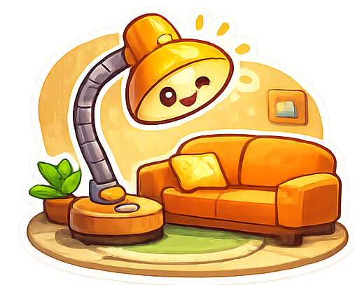
Sala
🔍 Aventura de lógica
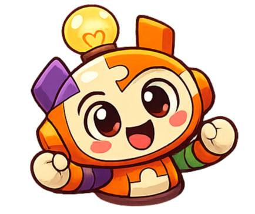
Olá! Eu sou o Logi, seu guia investigador! Prontos para resolver os mistérios da casa?
Cômodos da Casa

Sala
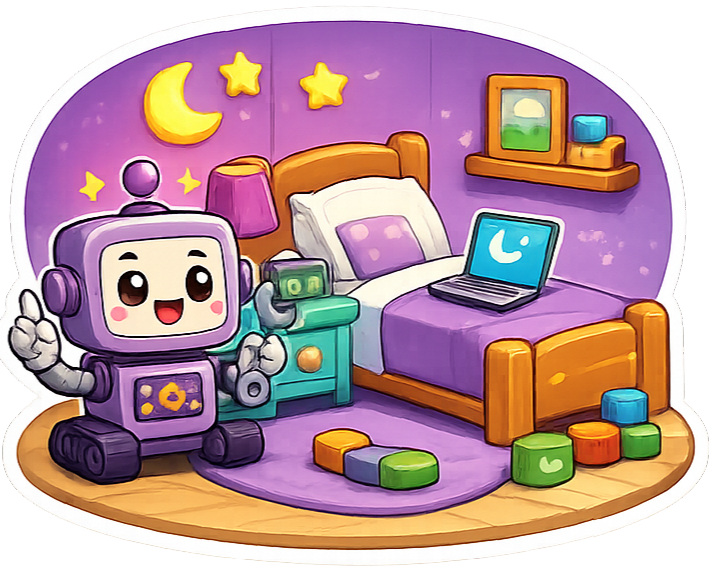
Quarto
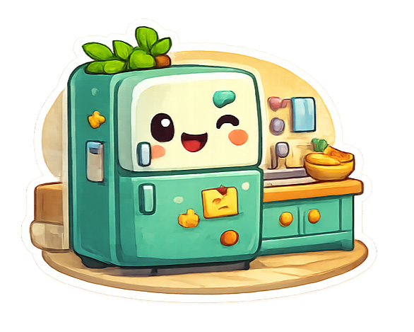
Cozinha
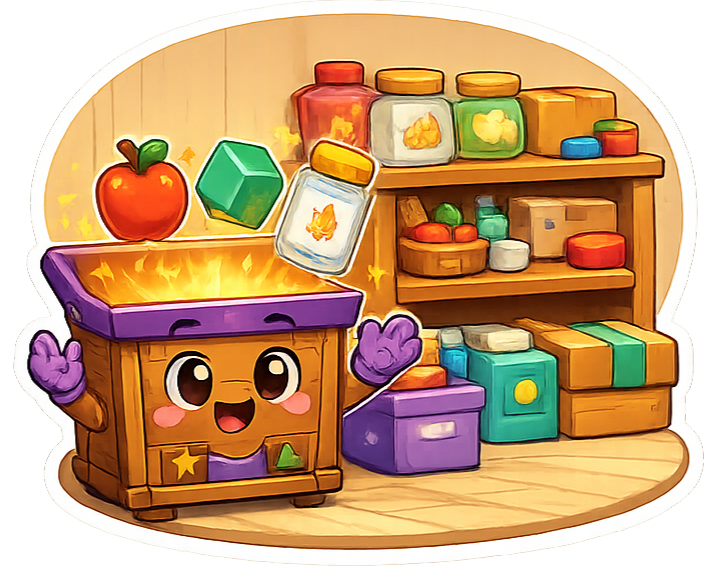
Despensa
2º e 3º ano do Ensino Fundamental
Opções para tornar o jogo mais confortável.
Aumenta o contraste de textos, fundos e controles.
Escolha entre tamanho padrão, maior e muito maior.
Vídeo de demonstração
Em breve aqui!
Os botões do jogo
Em todos os cômodos você vai achar estes botões. Toque em cada um para saber o que ele faz!
👆 Toque em um botão acima.
Complete cada cômodo para abrir o próximo. Se errar, é só tentar de novo!
Sala — Algoritmos
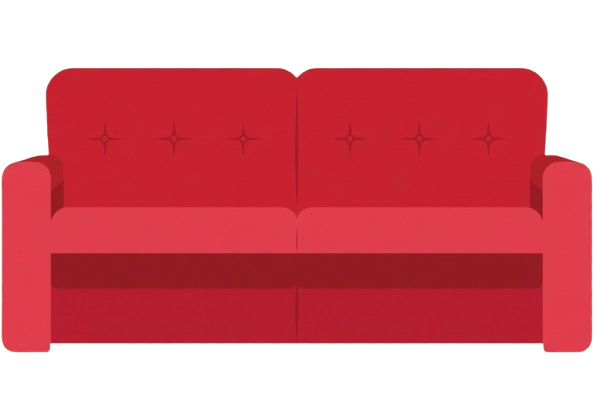
.📘 Exemplo de fase (já resolvida)
Sequência da resposta:
Resposta: 3 passos → e 2 passos ↑ levam o Logi até a estrela.
Quarto — Rotina para IR À ESCOLA
📘 Exemplo de fase (já resolvida)
Passos para IR À ESCOLA:
Rotina montada:
Resposta: banho, camiseta e tênis por último. A TV não combina com ir à escola!
Cozinha — Verdadeiro ou Falso
📘 Exemplo de fase (já resolvida)
“O sal não é doce.”
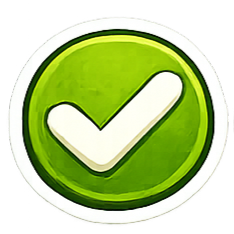
Verdadeiro ✓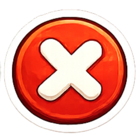
FalsoResposta: Verdadeiro! O sal NÃO é doce, então a frase está certa.
Despensa — Estoque inteligente
📘 Exemplo de fase (já resolvida)
Regra do Logi: escolha as frutas vermelhas.
 Maçã ✓
Maçã ✓
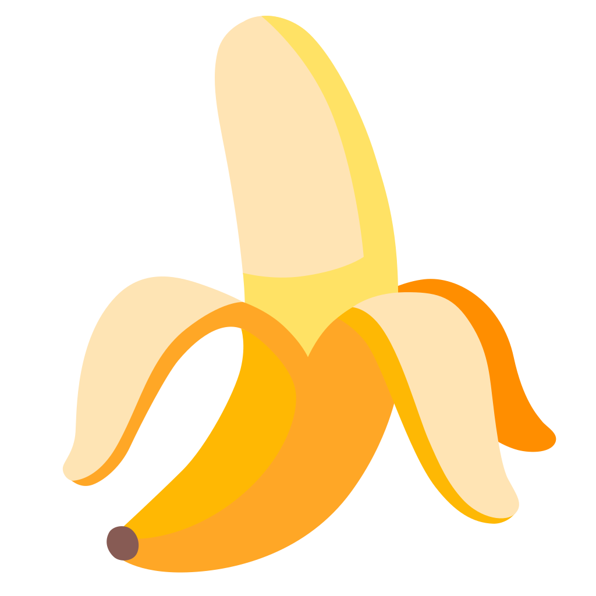
Banana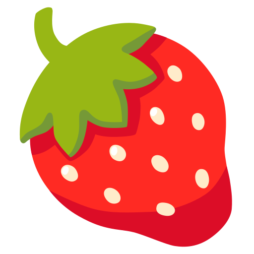
Morango ✓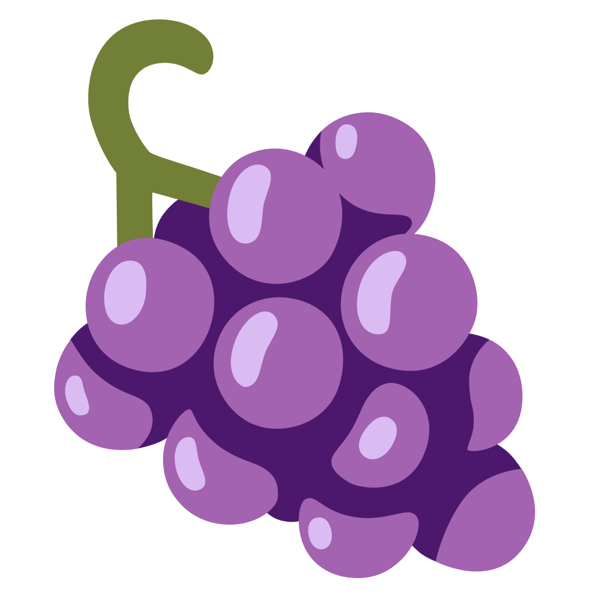
UvaResposta: maçã e morango são vermelhos, por isso foram escolhidos.